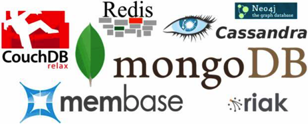

关于NoSQL数据库的一切，终于说清楚了
NoSQL 不仅仅是 SQL，它是 Not Only SQL 的缩写，也是众多非关系型数据库的统称。NoSQL 和关系型数据库一样，也是用来存储数据的仓库。
比如，通过 QQ、微信、微博等进行聊天互动，刷朋友圈，点赞，互评；又如，通过各大视频网站、音乐网站看视频、看直播、听音乐等，这么多数据都是需要存储的。
然而，传统的关系型数据库面对这些海量数据的存储，以及实现高访问量、高并发读/写，就会显得力不从心，尤其是当面对超大规模、高并发、高吞吐量的大型动态网站的时候，就会暴露出很多难以克服的问题，影响用户体验。
为了满足对海量数据的高速存储需求，实现高并发、高吞吐量，NoSQL 应运而生。NoSQL 的出现可以解决传统关系型数据库所不能解决的问题。
比如，微博、朋友圈的实时更新，就会出现每秒上万次的读/写需求。关系型数据库在面对每秒上万次的 SQL 查询操作时还能应对自如，但是在面对每秒上万次的 SQL 写操作时就难以胜任了。
普通的 BBS 系统网站也存在高并发读/写的需求，比如，实时统计在线人数、记录热门帖子的浏览次数等，当面对这些需求时，传统的关系型数据库就会出现大量问题。
对于很多提供 24 小时不间断服务的网站来说，对数据库系统的维护升级和扩展是非常折磨人的一件事，往往需要停机维护和数据迁移。
NoSQL 的出现解决了大规模数据库集中和数据种类不同所带来的各种问题，尤其是大数据实现的困难。
常见的 NoSQL 如下图所示。
NoSQL 具有如下特点：
我们将通过以下几个方面来比较 NoSQL 与传统关系型数据库。
关系型数据库：相对于 NoSQL，关系型数据库通常需要安装部署，开源的比较少，使用成本比较昂贵。尤其是 Oracle 数据库，需要花费大量资金购买，使用成本比较高。
关系型数据库：关系型数据库是采用关系型数据模型来组织的，它是行列表结构，通过行与列的二元形式表示出来，数据之间有很强的关联性。它采用二维表结构的形式对数据进行持久存储。
关系型数据库：关系型数据库将数据存储在系统的硬盘中，在查询的时候需要经过 SQL 层的解析，然后读入内存，实现查询，因此查询效率较低。
关系型数据库：由于关系型数据库采用关系型数据模型来存储数据，数据与数据之间的关联性较强，存在耦合性，因此不易扩展。尤其是存在多表连接（join）查询机制的限制，使得扩展很难实现。
NoSQL：NoSQL 一般不支持 ACID 特性，它实现最终一致性。
关系型数据库：关系型数据库支持 ACID 特性，具有严格的数据一致性。
关系型数据库：关系型数据库支持 SQL 语句，也支持复杂查询。SQL 是结构化查询语言、数据操纵语言、数据定义语言。
NoSQL 与传统关系型数据库是互补的关系，对方的劣势就是自己的优势，反之亦然。
以上这些相关业务场景都可以使用 NoSQL 来存储。NoSQL 还有很多其他应用，在此不再细述，请读者自行参考其他相关资料。
NoSQL 的 4 种数据模型如下。
键值对存储中的值可以是任意类型的值，如数字、字符串，也可以是封装在对象中的新的键值对。
它可以使用模式来指定某个文档结构，通常采用特定格式来存储半结构化的文档，最常使用的存储格式是 XML、JSON。每个文档都是自包含的数据单元，是一系列数据项的集合。
其中，键值对数据模型、列数据模型、文档数据模型统称为聚合模型，它们有一个共同特点：可以把一组相互关联的对象看作一个整体单元来操作，通常把这个单元称为一个聚合。
本文我们就详细介绍一下 NoSQL 数据库的分类，以便帮助读者在实际应用中选择不同的 NoSQL 数据库来实现不同的业务需求。
NoSQL 数据库大致可以分为四大类，分别如下。
典型代表：Redis（由 C/C++ 语言开发）、Memcached、Voldemort、Berkeley DB、Tokyo Cabinet/Tyrant 等。
当采用该类数据库存储数据时，需要定义数据结构（半结构化）才能进行存储。
典型代表：HBase（由 Java 语言开发）、Cassandra（由 Java 语言开发）、Riak（由 Erlang 语言、C语言及 JavaScript 组合开发）等。
当采用该类数据库存储数据时，需要定义数据结构（半结构化）才能进行存储。
典型代表：MongoDB（由 C++ 语言开发）、CouchDB（由 Erlang 语言开发）、RavenDB 等。
当采用该类数据库存储数据时，不需要定义数据结构（非结构化）就可以存储。
典型代表：Neo4j（由 Java 语言开发）、InfoGrid、Infinite Graph 等。
目前，NoSQL 数据库的使用场景比较广泛，很多企业都会根据自己相关的业务场景来使用各类 NoSQL 数据库，或者混合使用它们。
为什么需要使用 NoSQL？
随着互联网的高速发展，数据量、访问量呈爆发式增长，人们对网络的需求逐渐多样化。比如，通过 QQ、微信、微博等进行聊天互动，刷朋友圈，点赞，互评；又如，通过各大视频网站、音乐网站看视频、看直播、听音乐等，这么多数据都是需要存储的。
然而，传统的关系型数据库面对这些海量数据的存储，以及实现高访问量、高并发读/写，就会显得力不从心，尤其是当面对超大规模、高并发、高吞吐量的大型动态网站的时候，就会暴露出很多难以克服的问题，影响用户体验。
为了满足对海量数据的高速存储需求，实现高并发、高吞吐量，NoSQL 应运而生。NoSQL 的出现可以解决传统关系型数据库所不能解决的问题。
1) NoSQL 解决了高并发读/写问题
Web 2.0 动态网站需要根据用户的个性化信息来实时生成动态页面和提供动态信息，而无法使用动态页面的静态化技术，因此数据库的并发负载就会非常高。比如，微博、朋友圈的实时更新，就会出现每秒上万次的读/写需求。关系型数据库在面对每秒上万次的 SQL 查询操作时还能应对自如，但是在面对每秒上万次的 SQL 写操作时就难以胜任了。
普通的 BBS 系统网站也存在高并发读/写的需求，比如，实时统计在线人数、记录热门帖子的浏览次数等，当面对这些需求时，传统的关系型数据库就会出现大量问题。
2) NoSQL 解决了海量数据的高效率存储和访问问题
面对实时产生的大数据量的存储与查询，关系型数据库是难以应付的，会显得效率非常低；而利用 NoSQL 的高效存储与查询能力，就能解决这个问题。3) NoSQL 实现了高可用性及高可扩展性
在基于 Web 的架构中，关系型数据库难以进行横向扩展。当一个网站系统的用户量和访问量与日俱增的时候，数据库没有办法像 Web 服务器或应用服务器那样通过添加更多的硬件来搭建负载均衡的服务器。对于很多提供 24 小时不间断服务的网站来说，对数据库系统的维护升级和扩展是非常折磨人的一件事，往往需要停机维护和数据迁移。
NoSQL 的出现解决了大规模数据库集中和数据种类不同所带来的各种问题，尤其是大数据实现的困难。
常见的 NoSQL 如下图所示。

图1：常见的 NoSQL 数据库Logo
图1：常见的 NoSQL 数据库Logo
NoSQL 具有如下特点：
- 容易扩展，方便使用，数据之间没有关系。
- 数据模型非常灵活，无须提前为要存储的数据建立字段类型，随时可以存储自定义的数据格式。
- 适合大数据量、高性能的存储。
- 具有高并发读/写、高可用性。
NoSQL 与传统关系型数据库的比较
相信大家对传统关系型数据库都不陌生，我们常常使用的关系型数据库有 MySQL、Oracle、SQL Server、SQLite、DB2、Teradata、Infomix、Sybase、PostgreSQL、Access、FoxPro 等。我们将通过以下几个方面来比较 NoSQL 与传统关系型数据库。
1) 使用成本
NoSQL：NoSQL 使用简单，易搭建，大部分是开源软件，比较廉价，任何人都可以使用。关系型数据库：相对于 NoSQL，关系型数据库通常需要安装部署，开源的比较少，使用成本比较昂贵。尤其是 Oracle 数据库，需要花费大量资金购买，使用成本比较高。
2) 存储形式
NoSQL：NoSQL 具有丰富的存储形式，如 key-value（键值对）形式、图结构形式、文档形式、列簇形式等，因此，它可以存储各种类型的数据。关系型数据库：关系型数据库是采用关系型数据模型来组织的，它是行列表结构，通过行与列的二元形式表示出来，数据之间有很强的关联性。它采用二维表结构的形式对数据进行持久存储。
3) 查询速度
NoSQL：NoSQL 将数据存储在系统的缓存中，不需要经过 SQL 层的解析，因此查询效率很高。关系型数据库：关系型数据库将数据存储在系统的硬盘中，在查询的时候需要经过 SQL 层的解析，然后读入内存，实现查询，因此查询效率较低。
4) 扩展性
NoSQL：NoSQL 去掉了传统关系型数据库表与字段之间的关系，实现了真正意义上的扩展。它采用键值对的形式存储数据，消除了数据之间的耦合性，因此易扩展。关系型数据库：由于关系型数据库采用关系型数据模型来存储数据，数据与数据之间的关联性较强，存在耦合性，因此不易扩展。尤其是存在多表连接（join）查询机制的限制，使得扩展很难实现。
5) 是否支持 ACID 特性
ACID 特性是指数据库事务的执行要素，包括原子性、一致性、隔离性、持久性。NoSQL：NoSQL 一般不支持 ACID 特性，它实现最终一致性。
关系型数据库：关系型数据库支持 ACID 特性，具有严格的数据一致性。
6) 是否支持 SQL 语句
NoSQL：SQL 语句在 NoSQL 中是不被支持的，NoSQL 没有声明性查询语言，且没有预定义的模式。关系型数据库：关系型数据库支持 SQL 语句，也支持复杂查询。SQL 是结构化查询语言、数据操纵语言、数据定义语言。
NoSQL 与传统关系型数据库是互补的关系，对方的劣势就是自己的优势，反之亦然。
在什么应用场景下使用NoSQL
NoSQL 的应用场景比较广泛，下面简单说一下比较适合使用 NoSQL 的几个场景。- 对于大数据量、高并发的存储系统及相关应用。
- 对于一些数据模型比较简单的相关应用。
- 对数据一致性要求不是很高的业务场景。
- 对于给定 key 来映射一些复杂值的环境。
- 对一些大型系统的日志信息的存储。
- 存储用户信息，如大型电商系统的购物车、会话等。
- 对于多数据源的数据存储。
- 对易变化、热点高频信息、关键字等信息的存储。
以上这些相关业务场景都可以使用 NoSQL 来存储。NoSQL 还有很多其他应用，在此不再细述，请读者自行参考其他相关资料。
NoSQL 的数据模型
我们知道，关系型数据库的数据模型由数据结构、数据操作及完整性约束条件组成。同样，NoSQL 也有其相关的数据模型。NoSQL 的 4 种数据模型如下。
1) 键值对数据模型
键值对数据模型就是采用键值对形式将数据存储在一张哈希表中的一类数据库，这张哈希表具有一个特定的键和一个指向特定数据的指针。键值对存储中的值可以是任意类型的值，如数字、字符串，也可以是封装在对象中的新的键值对。
2) 列数据模型
列数据模型就是将数据按照列簇形式来存储的一类数据库，通常用于存储分布式系统的海量数据。它也有键，这些键指向多个列，由数据库的列簇来统一安排。3) 文档数据模型
文档数据模型以文档形式进行存储，它是键值对数据模型的升级版，是版本化的文档。它可以使用模式来指定某个文档结构，通常采用特定格式来存储半结构化的文档，最常使用的存储格式是 XML、JSON。每个文档都是自包含的数据单元，是一系列数据项的集合。
4) 图数据模型
图数据模型采用图结构形式存储数据，它是最复杂的 NoSQL，常被用于存储一些社交网络的社交关系，适用于存储高度互联的数据。它由多个节点和多条边组成，节点表示实体，边表示两个实体之间的关系。其中，键值对数据模型、列数据模型、文档数据模型统称为聚合模型，它们有一个共同特点：可以把一组相互关联的对象看作一个整体单元来操作，通常把这个单元称为一个聚合。
NoSQL 数据库的分类
NoSQL 数据库的种类繁多，它所存储的数据类型也是各异的。在实际应用中，企业往往会根据不同的业务场景来选择不同的 NoSQL 数据库，比如一个大型社交系统，可能需要使用多种 NoSQL 数据库才能满足业务需求。本文我们就详细介绍一下 NoSQL 数据库的分类，以便帮助读者在实际应用中选择不同的 NoSQL 数据库来实现不同的业务需求。
NoSQL 数据库大致可以分为四大类，分别如下。
1) 键值对存储数据库
主要采用键值对形式存储数据的一类数据库。典型代表：Redis（由 C/C++ 语言开发）、Memcached、Voldemort、Berkeley DB、Tokyo Cabinet/Tyrant 等。
当采用该类数据库存储数据时，需要定义数据结构（半结构化）才能进行存储。
2) 面向列存储数据库
主要按照列存储数据的一类数据库。典型代表：HBase（由 Java 语言开发）、Cassandra（由 Java 语言开发）、Riak（由 Erlang 语言、C语言及 JavaScript 组合开发）等。
当采用该类数据库存储数据时，需要定义数据结构（半结构化）才能进行存储。
3) 面向文档数据库
主要用于存储文档的一类数据库。文档也是它的最小单元，同一张表中存储的文档属性可以是多样化的，数据可以采用 XML、JSON、JSONB 等多种格式存储。典型代表：MongoDB（由 C++ 语言开发）、CouchDB（由 Erlang 语言开发）、RavenDB 等。
当采用该类数据库存储数据时，不需要定义数据结构（非结构化）就可以存储。
4) 面向图形数据库
主要用于存储图片信息的一类数据库。典型代表：Neo4j（由 Java 语言开发）、InfoGrid、Infinite Graph 等。
目前，NoSQL 数据库的使用场景比较广泛，很多企业都会根据自己相关的业务场景来使用各类 NoSQL 数据库，或者混合使用它们。
各类 NoSQL 数据库的比较
前面说了那么多关于 NoSQL 数据库的相关知识，接下来我们就来比较一下各类 NoSQL 数据库的优缺点，以方便在实际应用中正确选择合适的数据库，如下表所示。| 分类 | 数据模型 | 优点 | 缺点 | 适用场景 | 不适用场景 |
|---|---|---|---|---|---|
| 键值对存储数据库 | 一系列 key 指向 value 的键值对，通过采用哈希表来实现 |
|
|
|
|
| 面向 列存储数据库 | 采用列簇形式存储，将同一列数据存放在一起 |
|
功能相对同限 |
|
不适用于需要实 现 ACID 相关事务的业务 |
|
面向 文档 数据库 |
釆用文档形式存储，也可以看作一系列键值对，它的每个数据项都有对应的名称和值 |
|
|
|
在存储文档数据 时，需要在不同的文档上添加事务时不适用 |
|
面向图形 数据 库 |
釆用图结构形式存储，实体是一个节点，节点之间的关系是边 | 具有很多图结构算法的支持，如最短路径算法、最小生成树算法等 |
|
|
不适用于存储非 图结构的数据 |
关注公众号「站长严长生」，在手机上阅读所有教程，随时随地都能学习。内含一款搜索神器，免费下载全网书籍和视频。

微信扫码关注公众号